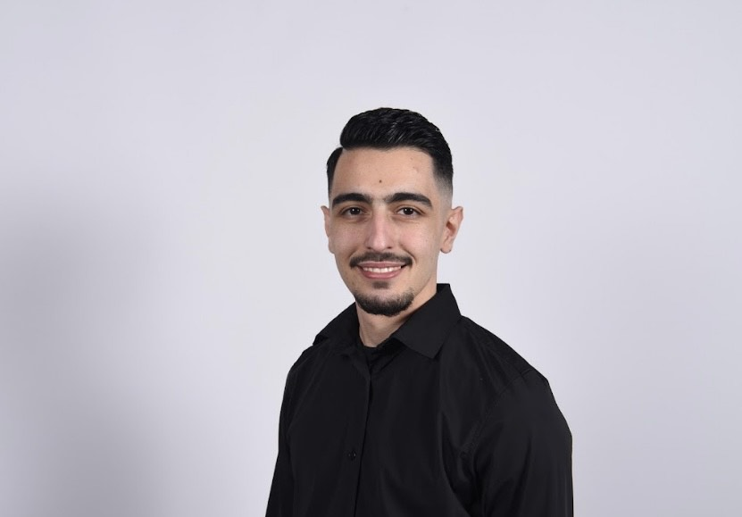

Eltion Krasniqi
Sachbearbeiter Verkauf & Administration
Kundenorientierte Fachkraft mit administrativer Kompetenz
Kundenorientierte Fachkraft mit administrativer Kompetenz

Es ist mir ein persönliches Anliegen, Menschen dort zu untersützen, wo ich einen Mehrwert schaffen kann. Der direkte Kontakt mit Kundinnen/Kunden und auch Teamkollegen motiviert mich besonders, da ich den Aufbau langfristiger Beziehungen und gegenseitiges Vertrauen sehr schätze. Für mich steht nicht nur die sachliche Lösung im Vordergrund, sondern auch das menschliche Miteinander. Ich arbeite struktuiert, verantwortungsbewusst und mit dem klaren Ziel, einen positiven und nachhaltigen Beitrag für Kunden sowie für das Unternehmen zu leisten. Es erfüllt mich, wenn ich durch meine Unterstützung Abläufe erleichtern, Orientierung geben und einen spürbaren Mehrwert schaffen kann. Mein Anspruch ist es, täglich einen positiven Impact zu hinterlassen - fachlich wie auch menschlich.
📍 Ostermundigen
📧 eltionkr77@gmail.com
📞 078 248 48 18
Lebenslauf herunterladen